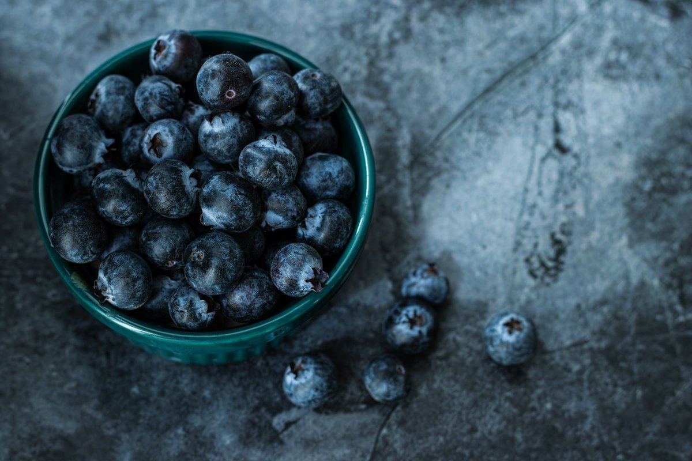

Compound In Blueberries May Help Muscle Cells Burn Excess Fat

Key takeaways
- I used to stare at my pantry at 9 PM, exhausted after another grueling workout that yielded zero visible results on the bathroom scale.
- My body felt sluggish, my recovery was atrocious, and I was ready to throw my sneakers in the trash.
- Track what feels sustainable and adjust gradually.
I used to stare at my pantry at 9 PM, exhausted after another grueling workout that yielded zero visible results on the bathroom scale. My body felt sluggish, my recovery was atrocious, and I was ready to throw my sneakers in the trash.
Then I stumbled into recent cellular metabolic research, discovering that a compound in blueberries may help muscle cells burn excess fat without requiring extreme calorie restriction or two-hour cardio sessions.
That specific plant compound is called anthocyanin, the vibrant pigment responsible for the rich blue hue in fresh berries. Researchers have found that anthocyanins trigger specific enzyme pathways inside human skeletal muscle, enhancing mitochondrial function and metabolic flexibility.
When I started adding a simple cup of wild blueberries to my morning routine, my stubborn energy plateaus finally began to shift. The science shows that this compound in blueberries may help muscle cells burn excess fat by encouraging muscle tissue to utilize circulating lipids for fuel rather than storing them as stubborn adipose tissue.
To get these metabolic benefits, consistency beats perfection every single time. Check out this related healthy tip to learn how tiny dietary tweaks add up faster than extreme diets.
I like keeping bags of frozen organic wild blueberries in my freezer because they contain even higher concentrations of polyphenols than fresh berries. You can dive into another practical guide on smart grocery shopping strategies for maximum antioxidant density.
The 2-Minute Win
Toss half a cup of frozen wild blueberries directly into your daily morning oatmeal or plain Greek yogurt. No blending or prep work required, just pure metabolic support before you step out the door.
When your skeletal muscle cells become more metabolically flexible, daily activities like climbing stairs or taking afternoon walks turn into passive energy-burning opportunities. I noticed my muscle soreness decreased significantly once I made this routine permanent.
Read my similar wellness insight on reducing post-workout inflammation naturally with simple kitchen staples. It turns out that when muscle cells aren't overwhelmed by chronic oxidative stress, they process glucose and fatty acids far more efficiently.
If you miss a day, don't sweat it or overthink it; your cellular health is built over months of general consistency, not 24 hours of perfection.
Try pairing your berries with a lean protein source or healthy fat like almonds to stabilize blood sugar responses throughout the morning. You can follow this stay consistent with this strategy to keep your energy steady through late-afternoon meetings.
Over time, these micro-habits radically transform how your body feels, moves, and processes fuel. For more practical ways to transform your routines without losing your sanity, explore more healthy-habits guides tailored for real life.
Educational only — not medical advice.
Recommended Reading
- How to Stabilize Blood Sugar for Energy: My Journey to Feeling Better
- Daily Gratitude Practice: Boost Mood & Reduce Stress Naturally
- The Ultimate Guide to Daily Hydration: Boost Energy & Wellness
More in healthy-habits
 healthy-habits
healthy-habitsThis Lifestyle Program Improved Cognition 55% More Than Basic Health Advice
Discover how This Lifestyle Program Improved Cognition 55% More Than Basic Health Advice with practical, science-backed
Read article → healthy-habits
healthy-habitsSweet Tooth Survival: Why Cutting Sugar Won't Beat Cravings
Tired of sugar cravings winning? Discover why cutting out all sweets might backfire and learn the real secrets to Sweet
Read article →Related posts
healthy-habitsThis Lifestyle Program Improved Cognition 55% More Than Basic Health Advice
Discover how This Lifestyle Program Improved Cognition 55% More Than Basic Health Advice with practical, science-backed
Read article →healthy-habitsSweet Tooth Survival: Why Cutting Sugar Won't Beat Cravings
Tired of sugar cravings winning? Discover why cutting out all sweets might backfire and learn the real secrets to Sweet
Read article → healthy-habits
healthy-habitsIntermittent Fasting for Weight Loss & Energy: Your Complete Guide
Unlock the secrets of Intermittent Fasting for Weight Loss & Energy. This guide demystifies IF methods like 16/8 and 5:2
Read article →